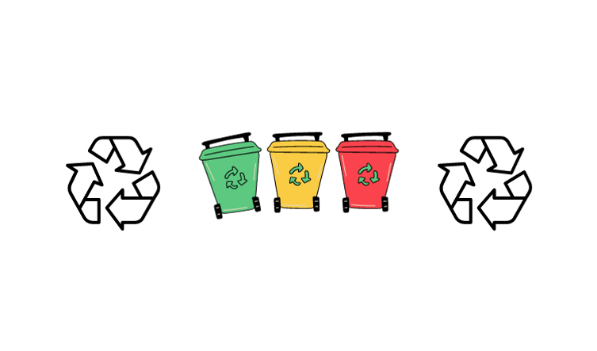

Sobre nosotros

Nuestros beneficios:
- Diseño e Implementación de Sistemas de Reciclaje: Ofrecemos asesoría personalizada para diseñar e implementar sistemas de reciclaje adaptados a las necesidades específicas de cada empresa. Esto incluye la identificación de puntos de reciclaje, selección de contenedores adecuados y establecimiento de procedimientos eficientes para la separación de residuos.
- Programas de Concientización Ambiental: Desarrollamos programas de concientización ambiental para sensibilizar a empleados, clientes y otras partes interesadas sobre la importancia del reciclaje. Esto puede incluir campañas educativas, talleres, eventos y materiales informativos para fomentar una cultura organizacional comprometida con el medio ambiente.
- Auditorías Ambientales y Evaluación de Impacto: Realizamos auditorías ambientales para evaluar la huella ecológica de la empresa y proponer mejoras. Además, llevamos a cabo evaluaciones de impacto ambiental para medir los resultados de los programas implementados y sugerir ajustes para optimizar su eficacia.
- Desarrollo de Políticas Sostenibles: Colaboramos en la creación de políticas internas que promuevan la sostenibilidad y la responsabilidad ambiental. Esto puede incluir la elaboración de políticas de reducción de residuos, compras sostenibles y uso eficiente de los recursos.
- Gestión de Residuos Específicos: Brindamos orientación especializada en la gestión de residuos específicos, como productos electrónicos, plásticos, papel y otros materiales, garantizando que se manejen de acuerdo con las normativas ambientales vigentes.